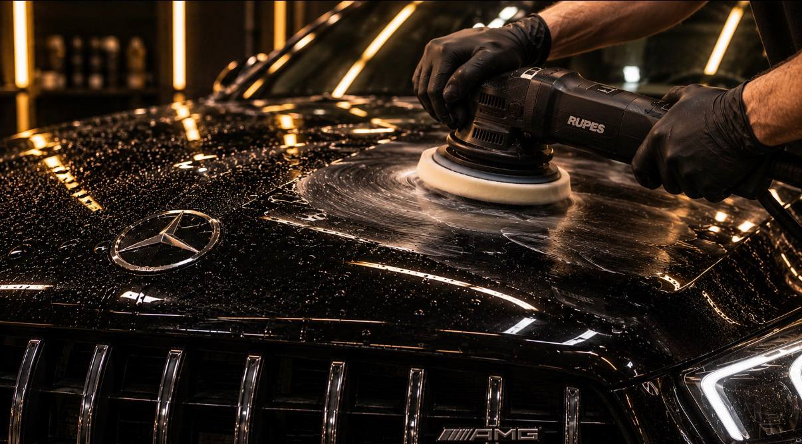

Откуда появился детейлинг: краткая история
Индустрия ухода за автомобилями зародилась в Южной Калифорнии (США) в начале XX века. Первые составы для блеска кузова варили вручную из натурального карнаубского воска. Однако настоящий прорыв произошел в конце 1960-х годов, когда автолюбители и коллекционеры ретро-каров потребовали принципиально нового уровня чистоты для престижных выставлк.
Современный автодетейлинг сформировался как отдельная высокоточная наука с появлением цифровых измерителей толщины лакокрасочного покрытия, роторо-орбитальных полировальных машин и жидких кварцевых (керамических) соединений на основе диоксида кремния.

Технология восстановления лакокрасочного покрытия
Каждый автомобиль имеет индивидуальную толщину лака (обычно от 90 до 150 микрон). Перед началом работ мастера нашей студии проводят детальный замер на каждой кузовной детали с помощью высокоточного электронного толщиномера.
Этапы полировки:
- Двухфазная бесконтактная мойка и глубокая очистка кузова специальной детейлинг-глиной от битума, смолы и металлических вкраплений.
- Маскировка уязвимых зон (хромированных элементов, уплотнителей и пластика) малярной лентой для предотвращения повреждений.
- Абразивная (черновая) полировка с использованием крупнозернистых паст для удаления глубоких царапин и рисок.
- Финишная антиголограммная полировка мягкими кругами для достижения безупречного зеркального глянца и глубины цвета.
- Обезжиривание поверхности и нанесение защитного керамического слоя для консервации результата.
Актуальный прайс-лист (Полировка и Керамика)
Цены синхронизированы в реальном времени.
| Наименование услуги | Срок выполнения | Стоимость (BYN) |
|---|---|---|
| Лёгкая освежающая полировка кузова | 1 день | от 350 руб. |
| Глубокая восстановительная полировка | 1–2 дня | от 500 руб. |
| Нанесение керамического состава (2 слоя) | 1 день | от 600 руб. |
| Гидрофобное покрытие «Антидождь» (все стёкла) | 1 час | от 90 руб. |